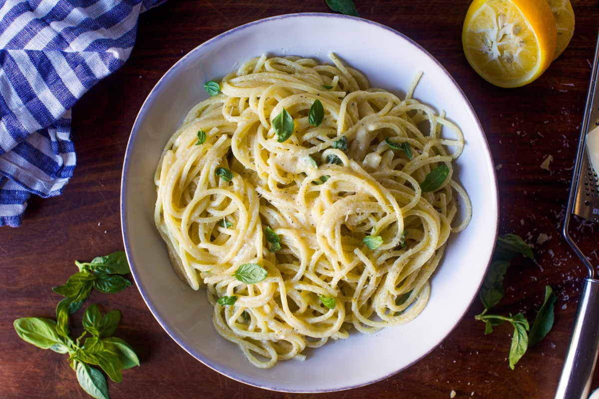

Home
Spaghetti Al Limone

Description
Spaghetti al Limone is a bright, aromatic pasta dish bursting with fresh lemon flavor. Simple yet
elegant, it combines the zest and juice of lemons, olive oil, butter, and cheese to create a creamy,
tangy sauce that perfectly coats each strand of pasta. Ideal for a refreshing dinner or a taste of
Mediterranean sunshine any time.
Ingredients
- 400g (14oz) spaghetti
- Zest of 2 lemons (plus extra for garnish)
- Juice of 2 lemons
- 3 tbsp extra virgin olive oil
- 4 tbsp unsalted butter
- 80g (¾ cup) freshly grated Parmesan or Pecorino Romano (plus extra for serving)
- Salt, to taste
- Black pepper, to taste
- (Optional) fresh basil or mint leaves, for garnish
Steps
-
Bring a large pot of salted water to a boil. Add spaghetti and cook until al dente, according
to package instructions. Reserve 1–2 cups of pasta water, then drain the pasta.
-
While the pasta cooks, heat olive oil and butter in a large pan over medium heat. Add half of
the lemon zest and cook for 1–2 minutes.
-
Pour in half of the lemon juice and stir gently. Season with a generous pinch of salt and black
pepper.
-
Add the drained hot pasta directly into the pan with the lemon mixture. Toss to coat.
-
Add most of the grated Parmesan, then toss again. Gradually add reserved pasta water and the rest
of the lemon juice to create a creamy sauce.
-
Taste and adjust seasoning if needed.
-
Serve immediately, garnished with extra zest, cheese, and fresh basil or mint if desired.